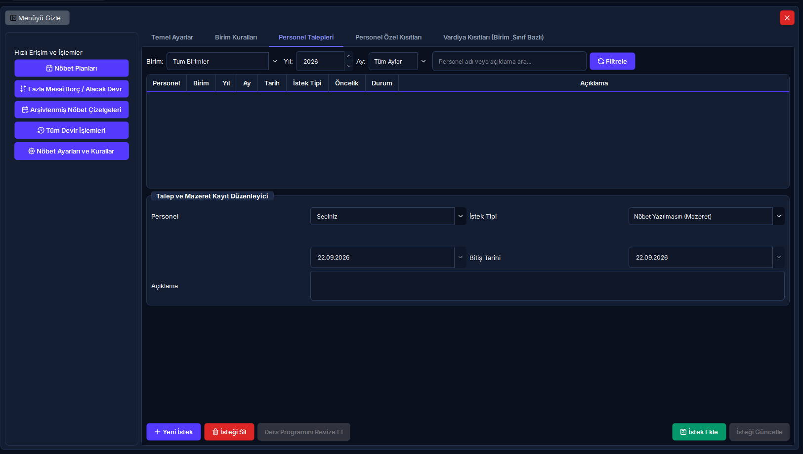

Personel Talepleri, Mazeretler & Onay Yönetimi
Personelin nöbet istemediği mazeret günleri, özel nöbet yazılma istekleri, lisansüstü eğitim ders kısıtları ve isteğe bağlı fazla mesai tavan taleplerinin birim amirince incelenmesi, onaylanması veya reddedilmesi sürecini kapsar.
Hızlı Reçete: Personel Taleplerinin Yönetimi ve Onay Akışı
Personelin haklı mazeret ve tercihlerinin kurumsal adalet zedelenmeden nöbet dağıtım algoritmasına iletilmesi.
Dönem ayını seçin, mazeretleri inceleyin, uygun olanları [İsteği Onayla], sakıncalı olanları gerekçe belirterek [İsteği Reddet] ile sonuçlandırın.
Sadece amir onayından geçen talepler Nöbet Dağıtım Motoruna kısıt olarak aktarılır; reddedilen veya askıdaki talepler dikkate alınmaz.
5N1K: Personel Talepleri Arayüz Bileşenleri ve Saha Kuralları
Ekranda gördüğünüz butonlar, kutular ve listelerin görevleri, kullanım kuralları ve sistemdeki etkileri.
Personel Nöbet Talebi ve Onay Süreç Şeması
Personelin talep girişinden birim amirinin değerlendirmesine ve Nöbet Dağıtım Motoruna aktarımına kadar uçtan uca akış.
(Mazeret, Nöbet İsteme, Eğitim, FM)"] --> B["Talep Havuzuna Kayıt
(Durum: Beklemede / Sarı)"] B --> C{"Birim Amiri İncelemesi
(Servis İhtiyacı & Çakışma Kontrolü)"} C -->|"Hizmete Engel Yok"| D["[İsteği Onayla]
(Durum: Onaylandı / Yeşil)"] C -->|"Aynı Güne Aşırı Yığılma / Yetersiz Kadro"| E["[İsteği Reddet]
(Durum: Reddedildi / Kırmızı)"] D --> F["Nöbet Dağıtım Motoru
(Kısıt Olarak Entegre Edilir)"] E --> G["Dağıtım Motoru Tarafından Yok Sayılır
(Personele Normal Nöbet Yazılabilir)"] F --> H["Nihai Aylık Nöbet Çizelgesi"]
Arayüz Yerleşimi ve Saha Kullanım Görünümü
RADPYS masaüstü arayüzünde "Personel İstekleri" sekmesinin yerleşimi ve onay kontrolleri.

Tabloda herhangi bir talebe tıklandığında alttaki [İsteği Onayla] ve [İsteği Reddet] butonları otomatik olarak aktif hale gelir. Seçim yapılmadığında butonlar tıklanamaz.
Mazeret onaylandığında nöbet dağıtım motoru bu personeli seçili gün ve saat aralığında kesinlikle nöbete yazmaz. Özel nöbet isteği onaylandığında ise personeli o slota yüksek öncelikle yerleştirir.
Adım Adım Personel Talebi Onay / Red Kılavuzu
Nöbet çizelgesi çözülmeden önce amirlerin takip etmesi gereken 4 standart adım.
Dönem Yılı ve Ayını Belirleyin
Pencerenin üstündeki Dönem Yılı ve Dönem Ayı kutularından nöbeti hazırlanacak olan ayı seçin. Sorumlu olduğunuz departmanı seçerek listeyi daraltın.
Mazeretleri ve Çakışmaları Değerlendirin
Tablodaki talepleri gözden geçirin. Özellikle aynı gün ve vardiyaya birden fazla personelin mazeret yazıp yazmadığını (serviste personel açığı oluşup oluşmayacağını) kontrol edin.
Talebi Onaylayın veya Reddedin
Satırı seçin; uygunsa [İsteği Onayla] butonuna basın (durum yeşile döner). Hizmet aksaması yaratacaksa [İsteği Reddet] butonuna basarak reddedin.
Nöbet Dağıtımına Geçiş Yapın
Tüm mazeretler sonuçlandırıldıktan sonra Modül 08 (Nöbet Hazırlık & Nöbet Dağıtım Motoru) ekranına geçerek otomatik çizelge dağıtımını başlatabilirsiniz. Onaylanan talepler otomatik olarak hesaba katılacaktır.
Sıkça Sorulan Sorular (SSS)
Personel talep giriş süresini kaçırırsa ne yapılır?
Birim amiri veya sistem yöneticisi, bu ekran üzerinden personel adına manuel olarak doğrudan yeni talep ekleyebilir ve anında onaylayabilir.
Onaylanan bir "Nöbet Yazılsın (İstek)" talebi nöbet dağıtım motoru tarafından kesinlikle karşılanır mı?
"Nöbet Yazılsın" istekleri yüksek öncelikli yumuşak kısıt (Soft Constraint) olarak ele alınır. Personelin 24 saat dinlenme kuralı veya fazla mesai tavanı ihlal edilmiyorsa nöbet dağıtım motoru bu isteği %100'e yakın oranla karşılar. Ancak sert bir dinlenme kuralıyla çakışırsa dinlenme kuralı üstün gelir.
"Nöbet Yazılmasın (Mazeret)" talebi onaylandığında nöbet dağıtım motoru bunu esnetebilir mi?
Hayır. Amir tarafından onaylanmış bir mazeret, nöbet dağıtım motoru için sert kısıt (Hard Constraint) niteliğindedir. O personelin o gün nöbete yazılması kesinlikle engellenir. Eğer hiçbir personel bulunamazsa dağıtım motoru o slotu boş bırakıp kullanıcıyı uyarır ama onaylı mazereti çiğnemez.
İsteği onaylanan personele sonradan acil durum nedeniyle nöbet yazılabilir mi?
Evet. Çizelge yayınlandıktan sonra ortaya çıkan ani hekim/teknisyen yetersizliklerinde, Modül 09 (Nöbet Devir & Mazeret) üzerinden personelin rızasıyla ikame ataması yapılabilir.